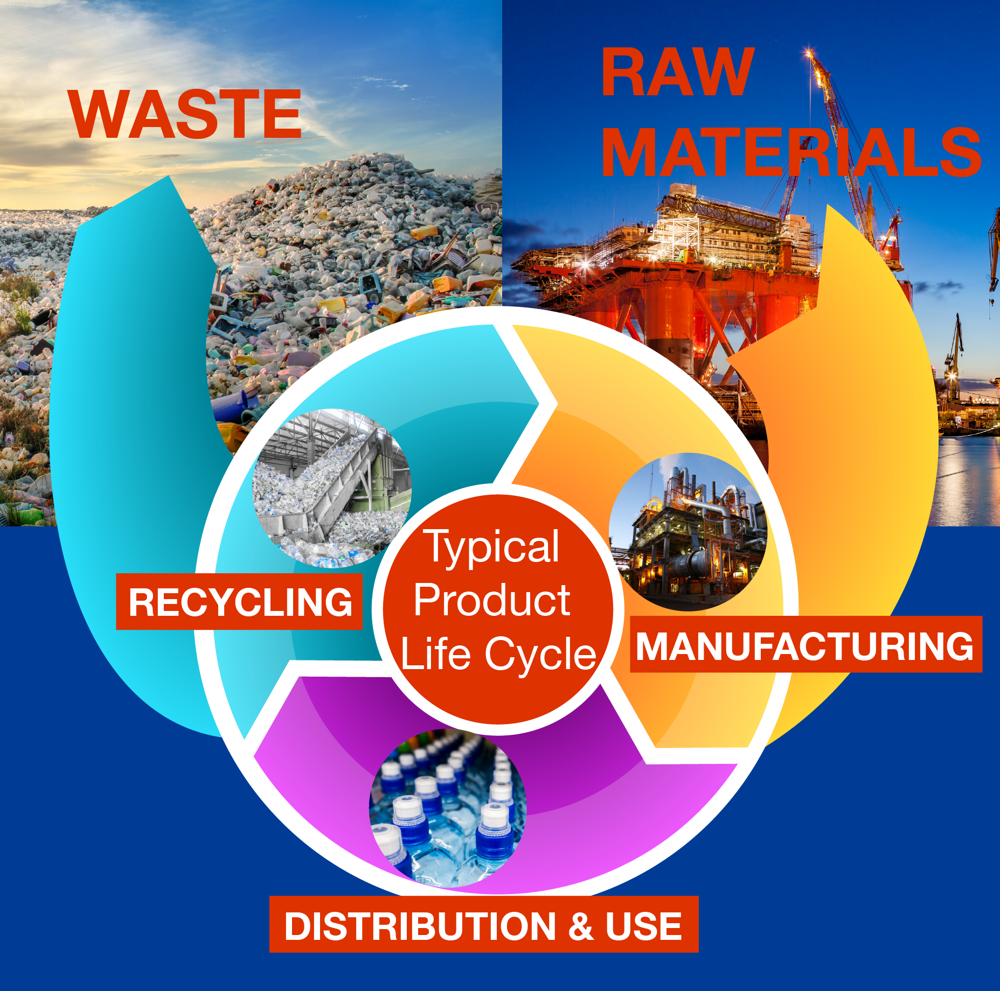

Contents
Introduction¶
Goal¶
The Goal of Product Innovation and Social Mapping (PrISM) is to empower designers to support a circular economy, create life-friendly chemistry, restore natural capital, and support a just and inclusive society.
Why is PrISM important?¶
Chemicals enable our lives as we know them, from personal care products to cell phones. However, the use of toxic chemicals create public health problems including cancers, heart disease, stroke, asthma, reduced fertility, birth defects, and intellectual disabilities. Poor health outcomes from exposure to chemicals disproportionately impact vulnerable populations and economically disadvantaged communities. Chemicals have benefits and hazards, which must both be considered together (1).
Many of the chemicals on the US market have never been fully tested for safety. Toxic chemicals not only influence human health but have detrimental effects on animals, plants, and ecosystems. Harmful chemicals cost the US more than $737 billion (4.4% of GDP) in healthcare costs and lost earnings (2a, 2b).
There are also significant negative impacts from waste: costs for wastewater treatment, reduced property value, harm to wildlife, and many more. Millions of people around the world face increased risk of disease from toxic waste sites, particularly in low- and middle-income regions (3, 4, 5).
Chemical and product designers have the power to change this trajectory of hazardous chemical use and waste generation through sustainable new product development. Using life cycle thinking, considering material sourcing, health and safety exposures, end-of-life possibilities, and eliminating toxic chemicals, you can design more economical, more sustainable, more desirable products. You can use existing design tools and efficiency metrics in concert to create products that are safe from their beginnings as raw materials to the end of their useful life and back into new materials. This can be done with design principles for sustainable green chemistry and engineering as a consistent backdrop.
The impacts of a product over the course of its lifetime are incredibly complex. While a product might excel in one aspect of the life cycle, it may create negative impacts in another. The tradeoffs we make throughout the design process are often nuanced and complicated. This makes it challenging to effectively compare the sustainability of different products that all have different strengths and weaknesses. It also underscores the importance of clearly articulating the boundaries you are able ot address in your design process. But it is possible to increase one’s awareness of the impacts and to make more informed decisions in product design and development. Product design is not a static activity, design decisions made early in the process may be revisited at later stages to continue to drive innovation and continual improvement.
To compare chemicals, materials and products for Product Assessment, Safety, and Sustainability (PASS) principles requires that one defines the life cycle stages, identifies all of the the chemicals used and produced and identifies the main impacts and exposures on stakeholders at each life cycle stage.
Using PrISM¶
PrISM walks chemical and product designers through a series of modules, applying life cycle thinking and alternative assessment concepts to allow the user to make informed decisions about their design. PrISM builds on alternatives assessment in combination with Design Principles to empower designers to make more informed decisions.
PrISM is applicable for designers at all levels who are interested in applying a holistic framework: * Product designers * Chemical designers * Entrepreneurs * Someone with their first great product idea * Students of chemistry, designer, and related disciplines
PrISM should be used early in the design process, before significant time and resources have been invested. And then it should be used again and again as the design evolves. In some cases, the user will complete step 7 and then cycle through PrISM again with new ideas. In other cases, the user will move forward with product or chemical design before returning to PrISM. Early use of PrISM encourages innovative and disruptive design changes that often discounted later in the process due to the resources already invested in the existing design. Iterative application of PrISM helps product and chemical designers continuously improve the design.
Additional Resources¶
Embedded in PrISM are additional resources and tools that will aid designers in evaluating and optimizing product design. These can be accessed at any time, and will help the user progress further in the process.
Product Assessment, Safety, and Sustainability (PASS) principles¶
The concepts and methods described in this workbook stem from established design principles and tools. Designing products that embody sustainable design principles helps to ensure that products are sustainable and safe. While these design principles do not translate directly into metrics, they do provide a directional compass for the criteria, tools and metrics that allow for measurement. PrISM is founded on Product Assessment, Safety, and Sustainability (PASS) principles, which provide a vision that any sustainable product: * Supports a circular economy * Creates life-friendly chemistry * Restores natural capital * Supports a just and inclusive society
PASS Principles¶
PASS principles are founded on existing designed principles, including The American Chemical Society Green Chemistry Institute’s Sustainable Design Principles which are derived from the Principles of Green Chemistry and Engineering (6a), and the OECD’s Broad Policy Principles for Sustainable Materials Management (6b). PASS principles were developed in collaboration with Interface.
Supports a circular economy. This is a broad and overarching principle that applies to the design of sustainable chemicals materials and products. A chemical, material or product is not sustainable inherently. Rather, sustainability is tied to the dynamic context in which materials flow in environmental and economic systems.
The circular economy concept is simple but difficult to implement. In a linear economy, as chemicals, materials, and products move through their life cycle stages and come to the end of life, they are disposed of as waste. In a circular economy, instead of disposing of products as waste, they become raw material for new iterations of products. To do so requires innovative ways of making products from which materials can be recovered and reused, or the molecular design of chemicals and materials that degrade completely and harmlessly.
A big challenge to a circular economy is the presence of toxic and persistent chemicals in products. Toxic and persistent chemicals in products can spoil opportunities for reuse, recycling and other aspects of a healthy circular economy. Products that support a circular economy avoid hazardous components and include plans for maximizing value recovery at end of life.
 Learn more about Circular Design
Creates life-friendly chemistry. Life-friendly chemistry is compatible with life and inherently low hazard. Risk is a function of hazard and exposure. Reducing the inherent hazards of chemicals can help to reduce risk from chemicals, materials and products. Hazards may also be physical. For example, litter is a form of unmanaged waste that can cause physical entrapment and may be mistaken as food by wildlife when it leaks into the environment.
Restores natural capital. Resource efficiency is not just about being efficient and doing more with less. It also includes the imperative to preserve natural capital. Resources that are renewable should not be used faster than they can be regenerated. And resources that are depleting, should not be dissipated and lost to recovery, reuse and recycling. Waste is a sign of inefficiency in a system.
Supports a just and inclusive society. Historically underserved populations are more frequently exposed to environmental hazards and chemicals of concern than those in affluent communities. This contributes to disproportionate health impacts, higher healthcare costs, and a continuing cycle of needless barriers to the best quality of life. This ultimately hinders the diversity of professionals in the field, limiting our collective perspective and ability to solve problems. Sustainable design improvements require that the negative impacts of products are not merely shifted from one population to another.
A number of useful tools already exist to measure various aspects of sustainability. These will help you quantify how products fulfill the vision set forth by these design principles. They include life cycle assessment (LCA), chemical hazard assessment (CHA), exposure assessment (EA), and others. Information about these tools is linked to throughout this workbook.
However, each of these tools only evaluates one sustainability attribute. In reality sustainability attributes are heavily interrelated. Improvement in one area may result in changes in performance in another.
For example, a material such as a plastic may be made only from chemicals with low inherent hazard. If it ends up in a product that is likely to end up as litter and degrades into microplastics, then it is not sustainable. Likewise, extremely toxic chemicals can be made from rapidly renewable feedstock and very efficient processes.
PrISM uses the tools and methods of alternatives assessment and adapts them for use in product design and development. “The objective of an alternatives assessment is to replace chemicals of concern in products or processes with inherently safer alternatives, thereby protecting and enhancing human health and the environment” (8). Inherently safer alternatives may be alternative chemicals, materials, or very different product designs that provide the same product service. Step 6 - Whole Product Assessment - includes examples of disruptive innovations versus safer substitutes.
Alternatives Assessment¶
Alternatives assessment (AA) is a structured method to evaluate alternatives to chemicals of concern in products and processes. Alternatives may include chemical substitutes, alternative materials or product and business model designs that eliminate the need for the chemical of concern altogether.
AA helps to ensure that designers make changes with their eyes wide open. The intent is to avoid negative ‘unintended consequences’. That is, to make sure that one does not move away from a chemical of concern in a product to an alternative that is unknown or potentially more problematic from the health and sustainability perspective. AA supports informed decision making. A number of AA guides are listed below. They provide resources for assessing alternatives for chemical hazard, exposure, economic impacts, performance, life cycle impacts, materials management, social impacts and more.
The tools and decision frameworks in AA can also support product design. Product assessment and product design are closely related. In the design process, the designer considers his or her options for chemicals, materials, business models, manufacturing options and more. Each of these options can be evaluated from a holistic perspective to inform decisions along the way. That is why this workbook builds on alternatives assessment in combination with PASS Principles to empower designers to make more informed decisions. Alternatives assessment, like all assessment tools is limited by the availability of good data. Despite that drawback, approaching design from a life cycle perspective and using the tools of alternatives assessment to assess various options can help stimulate ideas for product innovation.
Visit the IC2 website to access the complete IC2 Alternatives Assessment Guide
A Framework to Guide Selection of Chemical Alternatives (National Research Council)
Washington State Alternatives Assessment Guide for Small and Medium Businesses
California Safer Consumer Products Alternatives Assessment Guide v1.0
Introduction to Life Cycle Stages¶
Every chemical, material and product has a different life cycle. Depending on the supply chain associated with a chemical, material or product, it may be necessary to separate out production and manufacturing into multiple stages.
As you work through PrISM, think through each step of the supply chain and the individual ‘unit processes’ that bring the product from conception to production and manufacture to delivery to the user to the end of its useful life and hopefully into future materials and products. Where possible, map out the life cycle stages. This information will also support better understanding of the chemical ingredients used throughout the life cycle and potential stakeholder impacts including exposures.
Consider including some (screening) or all (advanced) of the unit processes in the life cycle stages as illustrated in the graphic below (9). The life cycle of an ideal product is circular.
image¶
Acknowledgements¶
NGC gratefully acknowledges the contributions of Justin Bours (Cradle to Cradle Products Innovation Institute, formerly UC Berkeley), Tom McKeag ( UC Berkeley Greener Solutions Course and Berkeley Center for Green Chemistry), Saskia van Bergen and Ken Zarker (Washington Department of Ecology), Mark Goedkoop (PRe Consulting), Margaret Whittaker (ToxServices), Jeremey Faludi (Dartmouth College), Mark Buczek, Ashley Baker and Amelia Nestler (Northwest Green Chemistry), participants in the 3D Printing Roundtable, Mikhail Davies and Connie Hensler (Interface Carpet), and Seattle GiveCamp 2018.
References¶
Holme, T. A., & Hutchison, J. E. (2018). [A Central Learning Outcome for the Central Science.] (http://pubs.acs.org/doi/10.1021/acs.jchemed.8b00174)
Attina, T. M., Hauser, R., Sathyanarayana, S., Hunt, P. A., Bourguignon, J., Myers, J. P., Trasande, L. (2016). Exposure to endocrine-disrupting chemicals in the USA: A population-based disease burden and cost analysis. The Lancet Diabetes & Endocrinology, 4(12), 996-1003; Jaramillo, P., & Muller, N. Z. (2016). [Air pollution emissions and damages from energy production in the US: 2002–2011]
The Top 10 Countries Turning the Corner on Toxic Pollution 2014
American Chemical Society Green Chemisry Institute Sustainable Design Principles. Organization for Economic Cooperation and Development (OECD), 2010. OECD Global Forum on Environment Focusing on Sustainable Materials Management, OECD Environment Directorate, 2010, 55 pages.
Interstate Chemicals Clearinghouse (IC2) Alternatives Assessment Guide Version 1.1, 2017.